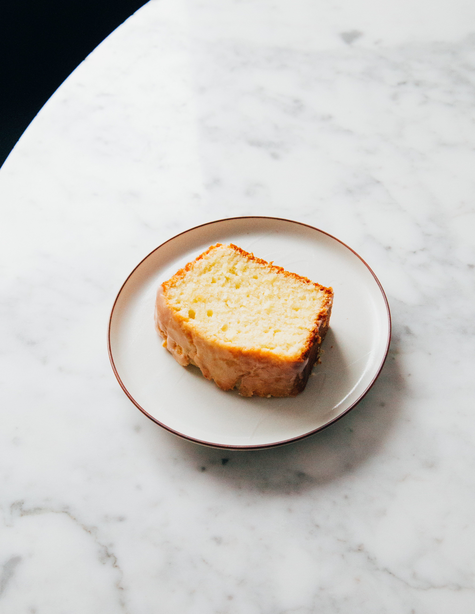

Home
Lemon Cake Recipe

Lemon cake ready to eat.
Ingredients
- 1 cup white sugar
- ½ cup butter
- 2 large eggs
- 2 teaspoons vanilla extract
- 1 ½ cups all-purpose flour
- 1 ¾ teaspoons baking powder
- ¾ cup milk
- 1 tablespoon lemon zest
- 1 tablespoon lemon juice
Steps
- Preheat the oven to 350 degrees F (175 degrees C). Grease a 9-inch square baking pan.
- Beat sugar and butter together in a mixing bowl using an electric mixer until light and fluffy. Beat in eggs and vanilla extract until well combined.
- Sift flour and baking powder together in a separate bowl; add to creamed mixture until incorporated.
- Pour in milk, lemon zest, and lemon juice; mix until smooth.
- Spoon batter into the prepared pan.
- Bake in the preheated oven until a toothpick inserted into the center comes out clean, about 35 minutes.